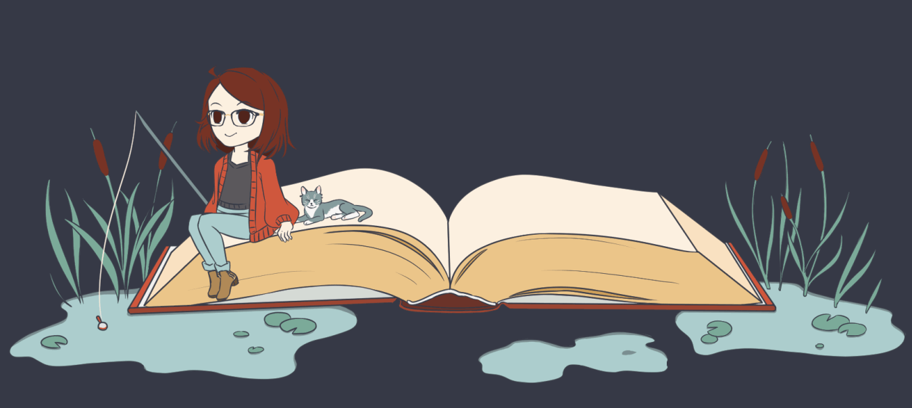
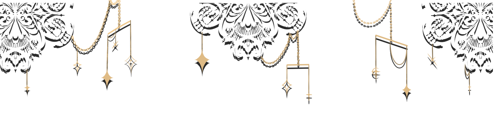

- - Welcome to my storybook! -
- Chapter 1: My Involvements
- Chapter 2: Projects
- Chapter 3: Art and Design


My name is Katherine Chong and I'm a third year college student pursuing my B.S. in computer science. I'm extremely thankful to have the opportunity to be a part of the bruin family at the University of California Los Angeles.
What motivates me is seeing my colorful imagination and thoughts being brought to life, whether it be through coding, drawing, and much more. I'm happiest when I'm blending my creative abilities and my interest in tech together to create something new and exciting! I think one of the most intriguing things about computer science is its infinite possibilies and applications, which makes it easy to blend with any interests.
Creating a positive impact wherever I go is a goal I hold dear to my heart. Being welcomed in a supportive community has brought me so much joy throughout my life. Throughout my time at UCLA, I've been fortunate to be able to contribute to many groups filled with amazing people, such as the Association for Computing Machinery (ACM at UCLA) and exploretech.la. I'd love nothing more than to give back and help bring these communities to greater heights than before.
ACM at UCLA, is the largest computer science student organization at UCLA. As the External Vice President for the 2020-2021 term, I maintain social media, finances, corporate relations, and cross-organization partnerships along with my 4 person team
exploretech.la is a student-led organization that aims to expose underserved Title 1 high school students in LAUSD to opportunities in technology. Last year, I was the External Director and this year I'm hoping to contribute as a general content member.
When I'm not occupied by academics or coding, I enjoy testing the limits of my artistic ability. I love mixing elements of fantasy and design to create unique characters and pieces. As someone with a very expressive face, incorporating emotions through facial expressions in my work is something I strive to do. Take a look some of my recent art and projects!
You can often see me jamming out to music while I'm productive as it often influences my work, especially my drawings. In my free time, I also watch shows, read books, or explore exciting places around my area with friends.
github